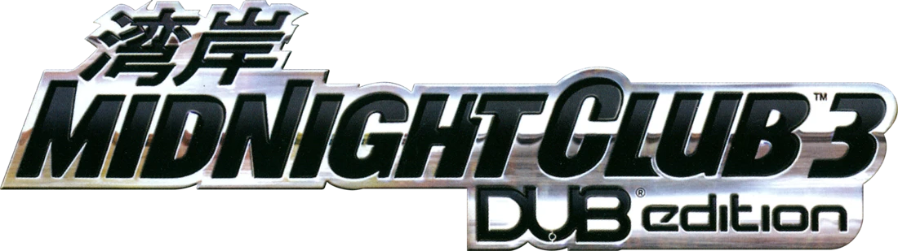
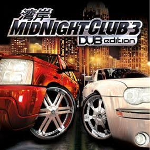

Switch installer
Builds the Nintendo Switch package of mcdub3-nx from your own original Xbox copy of the game. Everything happens in this browser : nothing is uploaded.
1 Choose your copy of the game
Supported editions: USA (NTSC-U) and Europe (PAL). Japanese discs are not accepted yet.
A disc image can be a
Redump
dump or a trimmed
XISO
. An extracted folder is the one that holds
default.xbe
,
assets_x.dat
and the
video
folder.

2 Create the package
The zip is about as large as the game (3.4 GB) and is written straight to your downloads folder while it is made. Keep this tab open until it finishes.
3 Copy it to the Switch
-
Extract the zip
and copy the
switchfolder inside it to the root of your SD card , merging it with the one already there. -
You now have
sdmc:/switch/mcdub3-nx/with the.nroand the disc: ingamefor the USA edition, ingame-eurfor the European one. Both editions can live side by side. -
Start
mcdub3-nx-usa.nro(USA) ormcdub3-nx-eur.nro(Europe) from the Homebrew Menu in title takeover mode (hold R while launching a game), or install the NSP forwarder from the releases page for a Home Menu icon.
Graphics and controller settings go in
mcdub3_env.txt
in the same folder; the package includes
mcdub3_env.example.txt
to start from. The European disc plays in English by default; add
RECOMP_LANGUAGE=fr (or de, es,
it) for another language.